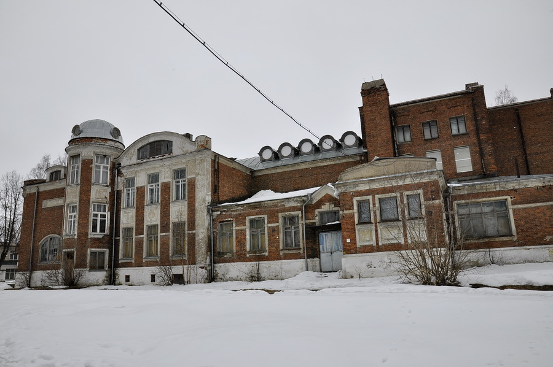
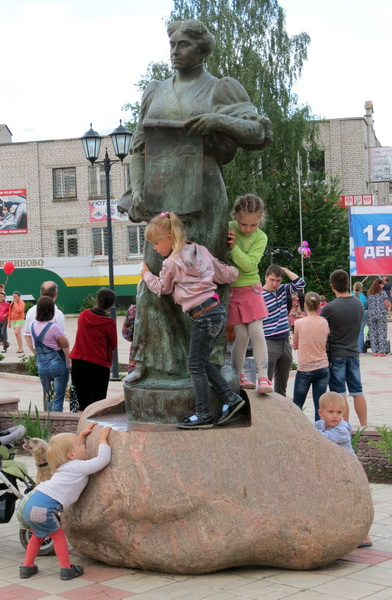
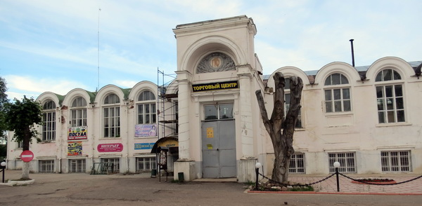
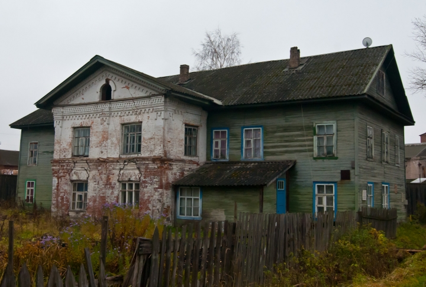
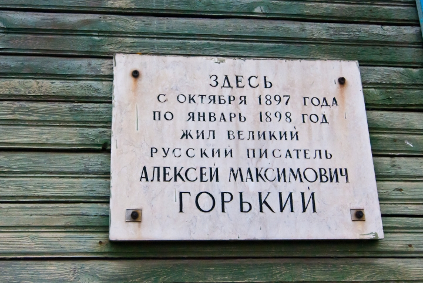

Кувшиново
Культура
1. Народный дом
В 1910-1913 годах в Кувшинове (тогда посёлок назывался Каменка) был построен Народный Дом по проекту московского архитектора Ф.Ф. Воскресенского при поддержке Юлии Кувшиновой (последняя владелица Каменской писчебумажной фабрики, инициатор постройки железной дороги Торжок — Каменное и основной акционер этого предприятия). Сейчас здесь Дом культуры, в котором есть множество кружков для детей и подростков.
Памятник Юлии Кувшиновой, женщине, много сделавшей для города.
Здание, построенное Ю.Кувшиновой
2. Дом, в котором останавливался М.Горький
 Здесь жил Максим Горький, приезжая к своему давнишнему другу Николаю Захаровичу Васильеву, работающему на кувшиновской фабрике лаборантом-химиком. Известно, что в 1893 г. Васильев без ведома Горького послал его рассказ "Емельян Пиляй" в московскую газету "Русские ведомости". 5 августа того же года в № 213 рассказ был напечатан. Так имя Горького впервые появилось в столичной прессе.
3. Усадьба Прямухино

Родовое имение Бакуниных. Имеет статус историко-природного заповедника (с
1969 г.). Здесь родился известный русский мыслитель и революционер, идеолог
анархизма М. А. Бакунин, в имении прошли его ранние годы. На территории
усадьбы при средней школе села Прямухино действует музей Бакуниных.
До конца XVIII в. Прямухино находилось во владении дворян Шишковых. 8
апреля 1779 г. село и усадьбу купил Михаил Васильевич Бакунин. Имение было
оформлено на его жену Любовь Петровну.
В разное время в усадьбе Прямухино гостили многие выдающиеся люди. Осенью 1881 г. сюда приезжал Лев Толстой, в 1897 г. – Максим Горький, несколько месяцев живший в Кувшиново, недалеко от Прямухино, где он занимался сбором материалов для литературной работы.
Тургенев побывал в Прямухине в 1841 г. Начинающий писатель увлекся одной из сестер Бакуниных, Татьяной Александровной. Отношения Т.А. Бакуниной и Тургенева продолжались в 1841—1843 гг.